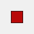

After completing this unit, you’ll be able to:
Feature Debugging is a tool that allows individual features to be inspected during a translation. It differs from inspecting data at a particular location in that it inspects features one at a time, and allows the author to trace that feature's progress through a workspace.
This is most useful when a problem has been identified as being during transformation, but the point of failure is unknown.
Feature Debugging is triggered by "breakpoints"; workspace connections that are flagged by the user as a location where features should be inspected:
The connection is highlighted in a darker black color with a red "stop" sign, to denote its new status:

Now enable Run > Stop at Breakpoints and then run the translation:

When the first feature arrives at the breakpoint, the translation is temporarily paused and information about the feature displayed in a Feature Inspector window.
The upper section of the window shows a graphic representation of the feature; the lower section lists properties such as Feature Type and Coordinate System; plus attribute and geometry information.

There are four buttons at the foot of the Feature Inspector window:
|
Button |
Operation |
Description |
|
|
Step to Next Connection |
This tool steps through the workspace one feature at a time, showing the status of a feature as it is processed. |
|
|
Step to Next Breakpoint |
This tool re-starts the translation, stopping the next time a feature reaches an inspection point. |
|
|
Continue Translation |
This tool re-starts the translation, ignoring all further breakpoints. |
|
 |
Stop Translation |
This tool stops the translation. |
The currently active connection is highlighted red to show it is the location where the translation is currently paused.
Open the starting workspace in FME Workbench 2021.0. Right-click the connection line directly after the PostalAddress feature type and click Add Breakpoint.

Click the Run menu > Stop at Breakpoints, then click Run.

The PostalAddress reader starts to read in features but hits the breakpoint and stops.

Click the Step to next connection button.

The first address feature is read in and stops at the breakpoint, where it can be inspected in the Feature Inspector window. It doesn’t have any geometry, but its attributes can be inspected.

Creator?
Click the Step to next connection button again. Your view will go back to the address feature and follow it along through the Prepare Addresses to Join bookmark. Pay attention to where it stops. You will need the answer for this unit’s quiz!

Although it’s not necessarily required in this workspace, being able to read in a single feature at a time can be useful for debugging.